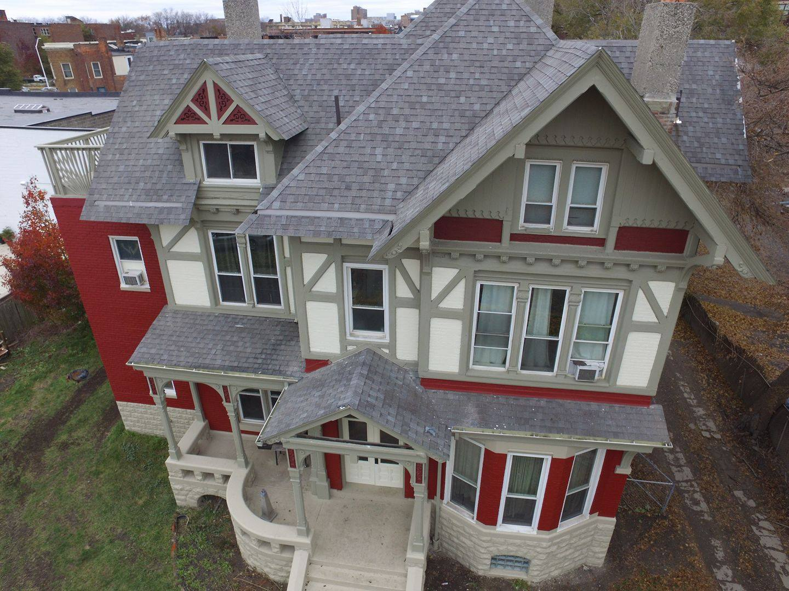
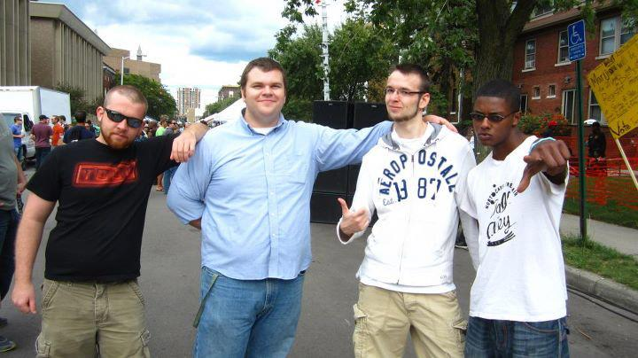
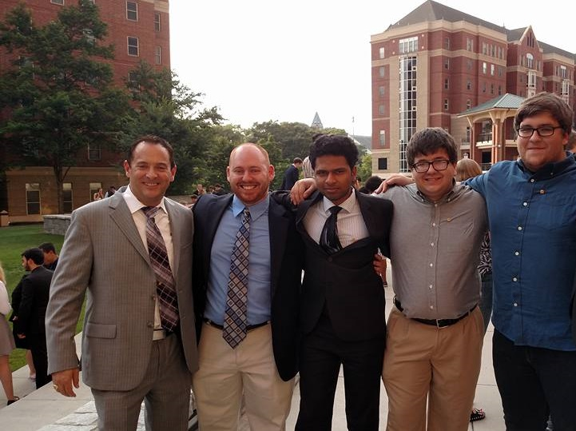
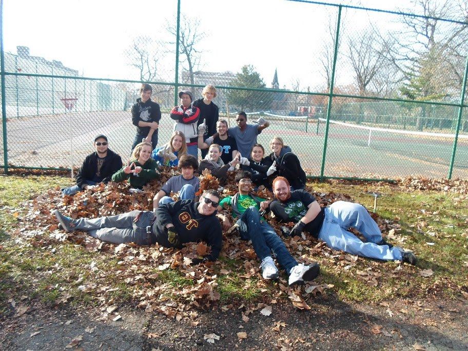
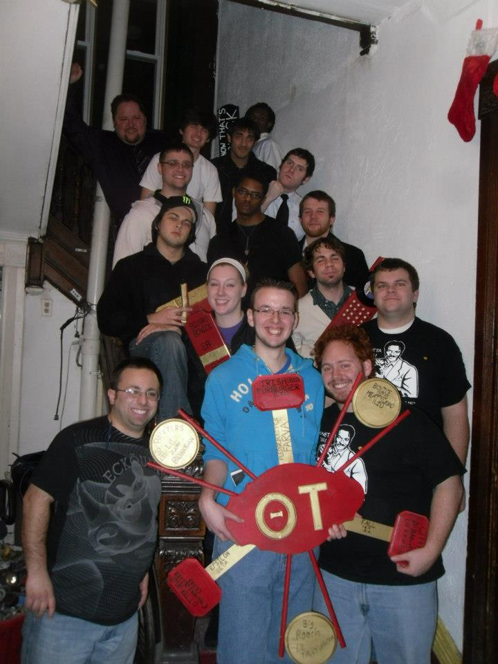

Theta Tau
Theta Tau

Theta Tau Pillars
The purpose of Theta Tau is to develop and maintain a high standard of professional interest among it's members and to unite them in a strong bond of fraternal fellowship
|  |  |
| We forge lifelong bonds of fraternal friendship, a journey that develops and delivers a network of lasting personal and professional relationships. We foster an inviting, safe, and social environment in which our members become lifelong friends. | We develop and nurture engineers with strong communication, problem-solving, collaboration, and leadership skills that we demonstrate in our profession, our community, and in our lives. |
|  |  |
| We are known for our service to our college, university and the larger community. Our service projects create a unifying environment for learning and personal growth for our members. | Our Wayne State Chapter boasts a roster of over 20 students spanning most engineering disciplines |